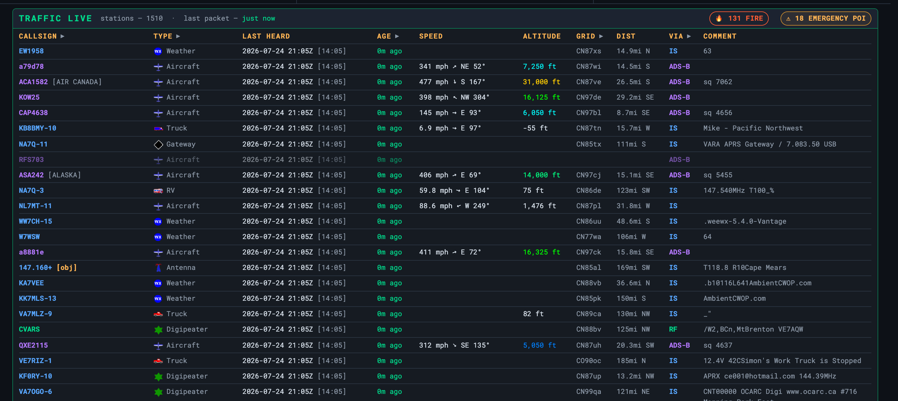

APRS — Stations & History
The dashboard station table and the history API that feeds it
Behind the map is the APRS history API on port 8085
— a small Flask service (graywolf-api) that reads GrayWolf’s history
database and feeds both the dashboard’s APRS LIVE table and the
map. It is installed and enabled automatically with GrayWolf; if you move the repo,
re-enable it with python3 scripts/enable-graywolf-api.py.
The dashboard station table
When APRS is running, the dashboard lists heard stations newest-first with callsign,
last-heard time, speed, altitude, and comment. Click a callsign to open the
live map focused on that station (?focus=CALLSIGN),
with its track loaded.

Recording heard stations
For the table and API to fill in, GrayWolf’s Position log database must be enabled (Station → Position log). That table is the single source both the dashboard and the map read. See GrayWolf Config.
Three service cards go green once it’s all running: APRS GrayWolf, APRS Stats API, and — if you feed from an SDR — APRS SDR Feed.